12.2 Polar Coordinates¶
Guiding question
A Cartesian grid is made of two families of straight lines. Many problems are better described by circles and rays: the heat shield of a space vehicle, a radar screen, the orbit of a planet, the sound field around a loudspeaker. For these, the natural address of a point is its distance from a fixed point and the direction in which it lies. That is a polar coordinate system. It has one price: a point no longer has a unique address, and that fact, which looks harmless, decides how we find symmetry, how we find complete curves, and above all how we find where two curves meet. This section builds the system, proves the formulas for converting and for lines and circles, graphs the standard families of polar curves (circles, cardioids and limaçons, roses, lemniscates, spirals), and develops the tests for symmetry, for the complete curve and for intersection points, all proved in full. The calculus of polar curves comes in the next section.
By the end of this section you should be able to:
-
plot a point given in polar coordinates, give all of its polar representations, including those with a negative radial coordinate, and convert between polar and Cartesian coordinates choosing the angle in the correct quadrant;
-
convert equations between polar and Cartesian form, and write polar equations of lines and circles;
-
graph \(r=f(\theta)\) by tables and by the Cartesian-to-polar method, recognize circles, limaçons, roses, lemniscates and spirals, and state the interval of \(\theta\) that traces each curve once;
-
test a polar equation for symmetry, and find the period of a polar curve;
-
find all intersection points of two polar curves, including the points reached at different angles and the origin;
-
prove each of these statements.
Polar coordinates and their representations¶
Fix a point \(O\), the pole (the origin), and a ray from \(O\), the polar axis, which we draw along the positive \(x\)-axis. Angles are measured counterclockwise from the polar axis, and the ray at angle \(\theta\) is the ray from \(O\) through the point \((\cos\theta,\sin\theta)\).
Definition 12.2.1: Polar coordinates
Let \(r\) and \(\theta\) be real numbers. The point \(P(r,\theta)\) is defined as follows.
-
If \(r>0\): the point on the ray at angle \(\theta\) whose distance from \(O\) is \(r\).
-
If \(r<0\): the point on the ray at angle \(\theta+\pi\) (the ray opposite to the ray at angle \(\theta\)) whose distance from \(O\) is \(\abs r\).
-
If \(r=0\): the point \(O\).
We call \((r,\theta)\) a polar representation (or a pair of polar coordinates) of \(P(r,\theta)\). The number \(r\) is the radial coordinate, a signed distance, and \(\theta\) is the angular coordinate.
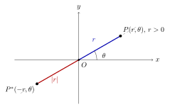
The picture is drawn for \(r=2.4\) and \(\theta=\frac\pi6\): \(P^*(-r,\theta)\) is the reflection of \(P(r,\theta)\) through the origin. Polar coordinates agree with Cartesian coordinates in the following precise sense.
Theorem 12.2.2: Conversion between polar and Cartesian coordinates
The point \(P(r,\theta)\), for every real \(r\) (positive, negative or zero), has Cartesian coordinates
Consequently \(x^2+y^2=r^2\), and \(\tan\theta=\frac yx\) if \(x\ne0\).
Proof. Case \(r>0\). The ray at angle \(\theta\) passes through the point \((\cos\theta,\sin\theta)\), which is at distance \(\sqrt{\cos^2\theta+\sin^2\theta}=1\) from \(O\). The point on this ray at distance \(r\) is \(r\) times this point: \((r\cos\theta,r\sin\theta)\). Case \(r<0\). By definition the point is on the ray at angle \(\theta+\pi\), at distance \(\abs r=-r\). By the case just proved it is \(\bigl(\abs r\cos(\theta+\pi),\abs r\sin(\theta+\pi)\bigr)\). Since \(\cos(\theta+\pi)=-\cos\theta\) and \(\sin(\theta+\pi)=-\sin\theta\), and \(\abs r=-r\), this is \((-r\cdot(-\cos\theta),\,-r\cdot(-\sin\theta))=(r\cos\theta,r\sin\theta)\). Case \(r=0\). Both sides are \((0,0)\). The consequences. \(x^2+y^2=r^2\cos^2\theta+r^2\sin^2\theta=r^2(\cos^2\theta+\sin^2\theta)=r^2\). If \(x\ne0\) then \(r\ne0\) and \(\cos\theta\ne0\), and \(\frac yx=\frac{r\sin\theta}{r\cos\theta}=\tan\theta\). ◻ ∎
A single point has many representations: we can add a full turn to \(\theta\), and we can replace \((r,\theta)\) by \((-r,\theta+\pi)\). The next theorem says that these are the only changes.
Theorem 12.2.3: All the representations of a point
-
The origin \(O\) has the representations \((0,\theta)\), for every real \(\theta\), and no others.
-
Let \(P\ne O\) have Cartesian coordinates \((x,y)\) and put \(\rho=\sqrt{x^2+y^2}>0\). Then there is an angle \(\theta_0\) with \(\cos\theta_0=\frac x\rho\) and \(\sin\theta_0=\frac y\rho\), and the representations of \(P\) are exactly
\[(\rho,\ \theta_0+2\pi k)\quad\text{and}\quad(-\rho,\ \theta_0+\pi+2\pi k),\qquad k=0,\pm1,\pm2,\dots\]
Proof. By Theorem 12.2.2, \((r,\theta)\) represents the point \((x,y)\) exactly when \(r\cos\theta=x\) and \(r\sin\theta=y\). (1) For \((x,y)=(0,0)\) these equations say \(r\cos\theta=0=r\sin\theta\). Since \(\cos\theta\) and \(\sin\theta\) are never both \(0\) (because \(\cos^2\theta+\sin^2\theta=1\)), this forces \(r=0\), and then any \(\theta\) works. (2) Existence of \(\theta_0\). Put \(u=\frac x\rho\) and \(v=\frac y\rho\), so \(u^2+v^2=1\) and \(\abs u\le1\). Let \(\theta_0=\arccos u\) if \(v\ge0\) and \(\theta_0=-\arccos u\) if \(v<0\). Then \(\cos\theta_0=u\) in both cases (cosine is even). Also \(\sin(\arccos u)=\sqrt{1-u^2}=\abs v\). If \(v\ge0\), \(\sin\theta_0=\abs v=v\); if \(v<0\), \(\sin\theta_0=-\abs v=v\). All the representations. Let \((r,\theta)\) represent \(P\). Squaring the two equations and adding, \(r^2=x^2+y^2=\rho^2\), so \(r=\rho\) or \(r=-\rho\). If \(r=\rho\), then \(\cos\theta=\frac x\rho=\cos\theta_0\) and \(\sin\theta=\sin\theta_0\). By the subtraction formula,
and the cosine equals \(1\) only at the multiples of \(2\pi\), so \(\theta=\theta_0+2\pi k\). If \(r=-\rho\), then \(\cos\theta=-\frac x\rho=\cos(\theta_0+\pi)\) and \(\sin\theta=-\frac y\rho=\sin(\theta_0+\pi)\), and the same argument with \(\theta_0+\pi\) in place of \(\theta_0\) gives \(\theta=\theta_0+\pi+2\pi k\). Conversely, each pair in the list satisfies \(r\cos\theta=x\) and \(r\sin\theta=y\), because sine and cosine have period \(2\pi\) and \(\cos(\theta_0+\pi)=-\cos\theta_0\), \(\sin(\theta_0+\pi)=-\sin\theta_0\). ◻ ∎
Procedure 12.2.4: From Cartesian to polar coordinates
Given \((x,y)\ne(0,0)\):
-
Compute \(\rho=\sqrt{x^2+y^2}\).
-
Find an angle \(\theta_0\) with \(\cos\theta_0=\frac x\rho\) and \(\sin\theta_0=\frac y\rho\). Decide the quadrant from the signs of \(x\) and \(y\) first; use a reference angle (\(\arctan\frac{\abs y}{\abs x}\)) and place it in that quadrant.
-
The representations are \((\rho,\theta_0+2\pi k)\) and \((-\rho,\theta_0+\pi+2\pi k)\).
-
Check by converting back: \(\rho\cos\theta_0=x\) and \(\rho\sin\theta_0=y\).
The origin is \((0,\theta)\) for any \(\theta\).
The tangent relation alone is not enough
\(\tan\theta=\frac yx\) has solutions in two opposite quadrants, and a calculator’s \(\arctan\frac yx\) always returns an angle between \(-\frac\pi2\) and \(\frac\pi2\), which is correct only when \(x>0\). For \((-1,1)\) the value \(\arctan(-1)=-\frac\pi4\) points into the fourth quadrant, but the point is in the second: \(\theta_0=\frac{3\pi}4\). Always look at the signs of \(x\) and \(y\).
Example 12.2.5: Points in polar coordinates
Plot the points \(A\left(2,\frac{7\pi}6\right)\), \(B\left(-3,\frac\pi4\right)\) and \(C\left(-2,-\frac{2\pi}3\right)\). For each, give its Cartesian coordinates and two other polar representations.
Solution. Locating the points. \(A\): \(r=2>0\), so \(A\) is on the ray at angle \(\frac{7\pi}6=210^\circ\) (in the third quadrant, \(30^\circ\) past the negative \(x\)-axis) at distance \(2\). \(B\): \(r=-3<0\), so first find the ray at angle \(\frac\pi4\), then go to the opposite ray (angle \(\frac\pi4+\pi=\frac{5\pi}4\)), at distance \(3\); \(B\) is in the third quadrant. \(C\): \(r=-2<0\) and \(\theta=-\frac{2\pi}3\) is \(120^\circ\) clockwise; the opposite ray has angle \(-\frac{2\pi}3+\pi=\frac\pi3\), so \(C\) is on the ray at \(60^\circ\), at distance \(2\), in the first quadrant (Figure below).
Cartesian coordinates (Theorem 12.2.2). For \(A\): \(\cos\frac{7\pi}6=-\frac{\sqrt3}2\) and \(\sin\frac{7\pi}6=-\frac12\), so \(A=\left(2\cdot\left(-\frac{\sqrt3}2\right),\,2\cdot\left(-\frac12\right)\right)=(-\sqrt3,-1)\). For \(B\): \(\cos\frac\pi4=\sin\frac\pi4=\frac{\sqrt2}2\), so \(B=\left(-3\cdot\frac{\sqrt2}2,\,-3\cdot\frac{\sqrt2}2\right)=\left(-\frac{3\sqrt2}2,-\frac{3\sqrt2}2\right)\approx(-2.12,-2.12)\). For \(C\): \(\cos\left(-\frac{2\pi}3\right)=-\frac12\) and \(\sin\left(-\frac{2\pi}3\right)=-\frac{\sqrt3}2\), so \(C=\left(-2\cdot\left(-\frac12\right),\,-2\cdot\left(-\frac{\sqrt3}2\right)\right)=(1,\sqrt3)\).
Other representations (Theorem 12.2.3: subtract \(2\pi\), or change the sign of \(r\) and add or subtract \(\pi\)). \(A\): \(\left(2,\frac{7\pi}6-2\pi\right)=\left(2,-\frac{5\pi}6\right)\) and \(\left(-2,\frac{7\pi}6-\pi\right)=\left(-2,\frac\pi6\right)\). \(B\): \(\left(3,\frac\pi4+\pi\right)=\left(3,\frac{5\pi}4\right)\) and \(\left(-3,\frac\pi4-2\pi\right)=\left(-3,-\frac{7\pi}4\right)\). \(C\): \(\left(2,-\frac{2\pi}3+\pi\right)=\left(2,\frac\pi3\right)\) and \(\left(-2,-\frac{2\pi}3+2\pi\right)=\left(-2,\frac{4\pi}3\right)\). Check. Convert \(\left(-2,\frac\pi6\right)\): \(\left(-2\cdot\frac{\sqrt3}2,-2\cdot\frac12\right)=(-\sqrt3,-1)=A\); and \(\left(2,\frac\pi3\right)\): \(\left(2\cdot\frac12,2\cdot\frac{\sqrt3}2\right)=(1,\sqrt3)=C\).
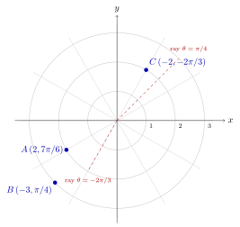
The dashed rays show the angle that was given for \(B\) and for \(C\); because \(r<0\), the point is on the opposite ray.
Example 12.2.6: Converting coordinates
(a) Convert the polar points \(P\left(-4,\frac{2\pi}3\right)\) and \(Q\left(6,-\frac{5\pi}4\right)\) to Cartesian coordinates. (b) Convert the Cartesian points \((-3,-3\sqrt3)\), \((-2,1)\) and \((0,-5)\) to polar coordinates, giving one representation with \(r>0\) and one with \(r<0\).
Solution. (a) \(P\). \(\cos\frac{2\pi}3=-\frac12\) and \(\sin\frac{2\pi}3=\frac{\sqrt3}2\), so \(x=-4\cdot\left(-\frac12\right)=2\) and \(y=-4\cdot\frac{\sqrt3}2=-2\sqrt3\): \(P=(2,-2\sqrt3)\approx(2,-3.46)\). \(Q\). \(\cos\left(-\frac{5\pi}4\right)=\cos\frac{5\pi}4=-\frac{\sqrt2}2\) and \(\sin\left(-\frac{5\pi}4\right)=-\sin\frac{5\pi}4=\frac{\sqrt2}2\), so \(Q=\left(6\cdot\left(-\frac{\sqrt2}2\right),\,6\cdot\frac{\sqrt2}2\right)=\left(-3\sqrt2,3\sqrt2\right)\). (b) \((-3,-3\sqrt3)\). \(\rho=\sqrt{9+27}=\sqrt{36}=6\). Both coordinates are negative, so the point is in the third quadrant. \(\cos\theta_0=\frac{-3}6=-\frac12\) and \(\sin\theta_0=\frac{-3\sqrt3}6=-\frac{\sqrt3}2\): the reference angle is \(\frac\pi3\), so \(\theta_0=\pi+\frac\pi3=\frac{4\pi}3\). Representations: \(\left(6,\frac{4\pi}3\right)\) and \(\left(-6,\frac{4\pi}3-\pi\right)=\left(-6,\frac\pi3\right)\). Check: \(6\cos\frac{4\pi}3=-3\), \(6\sin\frac{4\pi}3=-3\sqrt3\). \((-2,1)\). \(\rho=\sqrt{4+1}=\sqrt5\). The point is in the second quadrant (\(x<0\), \(y>0\)), with \(\tan\theta=-\frac12\). The calculator value \(\arctan\left(-\frac12\right)\approx-0.4636\) is in the fourth quadrant, so we must add \(\pi\): \(\theta_0=\pi-\arctan\frac12\approx3.1416-0.4636=2.6779\). Representations: \(\left(\sqrt5,\,\pi-\arctan\tfrac12\right)\) and \(\left(-\sqrt5,\,-\arctan\tfrac12\right)\) (subtract \(\pi\) from \(\theta_0\)). Check: \(\sqrt5\cos(2.6779)\approx-2.000\) and \(\sqrt5\sin(2.6779)\approx1.000\). \((0,-5)\). \(\rho=5\), and \(\frac y\rho=-1\), \(\frac x\rho=0\), so \(\theta_0=-\frac\pi2\) (\(\tan\theta\) is undefined here; the signs and the unit vector \((0,-1)\) decide). Representations: \(\left(5,-\frac\pi2\right)\) and \(\left(-5,\frac\pi2\right)\).
Knowledge Check 12.2.1: Same point or not
Which of the pairs \(\left(2,\frac\pi3\right)\), \(\left(-2,\frac{4\pi}3\right)\), \(\left(2,\frac{7\pi}3\right)\), \(\left(-2,-\frac\pi3\right)\) represent the same point as \(\left(2,\frac\pi3\right)\)?
Distance, equations, lines and circles¶
Theorem 12.2.7: The distance formula in polar coordinates
For any real \(r_1,r_2,\theta_1,\theta_2\), the distance \(d\) between \(P_1(r_1,\theta_1)\) and \(P_2(r_2,\theta_2)\) satisfies
Proof. By Theorem 12.2.2, \(P_1=(r_1\cos\theta_1,r_1\sin\theta_1)\) and \(P_2=(r_2\cos\theta_2,r_2\sin\theta_2)\). The distance formula gives
where the last step uses \(\cos^2+\sin^2=1\) and the subtraction formula for the cosine. (This is the law of cosines.) ◻ ∎
Definition 12.2.8: The graph of a polar equation
The graph of a polar equation \(E(r,\theta)=0\) (for example \(r=f(\theta)\)) is the set of all points \(P\) for which at least one polar representation \((r,\theta)\) of \(P\) satisfies the equation.
Because a point has infinitely many representations, a point can be on the graph even though the representation you happened to write down does not satisfy the equation. For instance \(\left(-1,\frac{3\pi}2\right)\) does not satisfy \(r=1+\cos\theta\) (the right side is \(1+0=1\)), yet it represents the same point as \(\left(1,\frac\pi2\right)\), which does: the point \((0,-1)\) is on the graph of \(r=1+\cos\theta\). The next theorem tells when an equation can be converted without such surprises.
Theorem 12.2.9: Converting equations
-
Let \(F(x,y)=0\) be a Cartesian equation and \(E(r,\theta)=F(r\cos\theta,r\sin\theta)\). A point is on the graph of \(E(r,\theta)=0\) exactly when it satisfies \(F(x,y)=0\), and then every representation of the point satisfies \(E=0\).
-
The graph of \(r\,E(r,\theta)=0\) is the graph of \(E(r,\theta)=0\) together with the origin.
Proof. (1) Let \((r,\theta)\) be any representation of the point \(P=(x,y)\). By Theorem 12.2.2, \(E(r,\theta)=F(r\cos\theta,r\sin\theta)=F(x,y)\), which does not depend on which representation we chose. So \(E=0\) holds for one representation if and only if \(F(x,y)=0\), if and only if it holds for all. (2) A pair \((r,\theta)\) satisfies \(rE(r,\theta)=0\) exactly when \(r=0\) or \(E(r,\theta)=0\). The pairs with \(r=0\) represent the origin, so the origin is on the graph of \(rE=0\). A point \(P\ne O\) has only representations with \(r\ne0\) (Theorem 12.2.3), so it is on the graph of \(rE=0\) exactly when some representation satisfies \(E=0\), that is, when it is on the graph of \(E=0\). ◻ ∎
So multiplying by \(r\) can add only the origin, and it adds nothing when the origin is already on the graph. Dividing by \(r\) can lose only the origin, and it loses nothing when the origin is on the graph of the new equation.
Theorem 12.2.10: Lines in polar coordinates
-
The graph of \(\theta=\alpha\) is the line through \(O\) that contains the ray at angle \(\alpha\) (slope \(\tan\alpha\), or the \(y\)-axis if \(\cos\alpha=0\)).
-
The vertical line \(x=h\) has the polar equation \(r\cos\theta=h\) and the horizontal line \(y=k\) has \(r\sin\theta=k\).
-
Normal form. Let \(p>0\). The line whose point nearest to \(O\) is \(P(p,\alpha)\) is the graph of \(r\cos(\theta-\alpha)=p\).
-
If \(b\ne0\), the line \(y=mx+b\) is the graph of \(r=\dfrac{b}{\sin\theta-m\cos\theta}\).
Proof. (1) The graph is the set of points \(P(r,\alpha)\), \(r\) real. By Theorem 12.2.2 this is \(\{r(\cos\alpha,\sin\alpha)\}\), the line through \(O\) with direction vector \((\cos\alpha,\sin\alpha)\). (2) Apply Theorem 12.2.9(1) to \(x-h=0\) and \(y-k=0\). (3) Let \(\mathbf n=(\cos\alpha,\sin\alpha)\), a unit vector. The foot of the perpendicular from \(O\) is \(p\,\mathbf n=(p\cos\alpha,p\sin\alpha)=P(p,\alpha)\), and the line through it perpendicular to \(\mathbf n\) is \(\{X:\ \mathbf n\cdot(X-p\mathbf n)=0\}=\{X:\ \mathbf n\cdot X=p\}\), because \(\mathbf n\cdot\mathbf n=1\). In coordinates this is \(x\cos\alpha+y\sin\alpha=p\). Now put \(x=r\cos\theta\), \(y=r\sin\theta\):
By Theorem 12.2.9(1) the line is the graph of \(r\cos(\theta-\alpha)=p\). (4) By Theorem 12.2.9(1), \(y=mx+b\) becomes \(r\sin\theta=mr\cos\theta+b\), that is \(r(\sin\theta-m\cos\theta)=b\). If \(\sin\theta=m\cos\theta\) this reads \(0=b\), which is false, so no point has such an angle; for every other \(\theta\) the equation is \(r=\frac b{\sin\theta-m\cos\theta}\). ◻ ∎
Theorem 12.2.11: Circles in polar coordinates
-
For \(a\ne0\), the graph of \(r=a\) is the circle of radius \(\abs a\) centered at \(O\).
-
The circle of radius \(R\) whose center is \(C(\rho_0,\theta_0)\) is the graph of
\[r^2-2\rho_0\,r\cos(\theta-\theta_0)=R^2-\rho_0^2 .\]If the center is the Cartesian point \((a,b)\), this reads \(r^2-2r(a\cos\theta+b\sin\theta)=R^2-a^2-b^2\).
-
If \((a,b)\ne(0,0)\), the graph of \(r=2a\cos\theta+2b\sin\theta\) is the whole circle of radius \(\sqrt{a^2+b^2}\) centered at \((a,b)\), which passes through the origin. In particular \(r=2a\cos\theta\) is the circle with center \((a,0)\) and radius \(\abs a\), and \(r=2b\sin\theta\) is the circle with center \((0,b)\) and radius \(\abs b\).
Proof. (1) A point is on the graph if some representation has \(r=a\); its distance from \(O\) is then \(\abs a\). Conversely, a point at distance \(\abs a\) from \(O\) has the representations \((\abs a,\theta_0)\) and \((-\abs a,\theta_0+\pi)\) (Theorem 12.2.3), and one of them has radial coordinate \(a\). (2) The point \(P(r,\theta)\) is on the circle exactly when \(\abs{PC}^2=R^2\). By Theorem 12.2.7, \(\abs{PC}^2=r^2+\rho_0^2-2r\rho_0\cos(\theta-\theta_0)\), so the condition is \(r^2-2\rho_0r\cos(\theta-\theta_0)=R^2-\rho_0^2\). The distance does not depend on the representation chosen, so the equation holds for one representation of \(P\) exactly when it holds for all. If \(C=(a,b)\) then \(a=\rho_0\cos\theta_0\) and \(b=\rho_0\sin\theta_0\), and \(\rho_0\cos(\theta-\theta_0)=\rho_0\cos\theta\cos\theta_0+\rho_0\sin\theta\sin\theta_0=a\cos\theta+b\sin\theta\). (3) Here \(R^2=a^2+b^2\), so the right side of the equation in (2) is \(0\) and the equation is \(r\bigl(r-2a\cos\theta-2b\sin\theta\bigr)=0\). By Theorem 12.2.9(2), the graph of \(r=2a\cos\theta+2b\sin\theta\) is the circle, provided the origin is on the graph of \(r=2a\cos\theta+2b\sin\theta\). It is: \(2a\cos\theta+2b\sin\theta=0\) when \((\cos\theta,\sin\theta)=\frac1{\sqrt{a^2+b^2}}(-b,a)\), an angle that exists because this is a unit vector, and then \(r=0\). (Equivalently, the circle passes through \(O\) because \(\abs{OC}=R\).) ◻ ∎
Example 12.2.12: Converting equations
Convert to the other coordinate system and identify the graph: (a) \(r=6\cos\theta-8\sin\theta\); (b) \(r^2\cos2\theta=8\); (c) \(y=2x^2\); (d) \(3x-4y=12\).
Solution. (a) Multiply by \(r\) (see Theorem 12.2.9(2)): \(r^2=6r\cos\theta-8r\sin\theta\). Substitute \(r^2=x^2+y^2\), \(r\cos\theta=x\), \(r\sin\theta=y\): \(x^2+y^2=6x-8y\). Collect and complete the squares:
This is the circle with center \((3,-4)\) and radius \(5\), which agrees with Theorem 12.2.11(3) for \(2a=6\), \(2b=-8\). Multiplying by \(r\) could have added the origin, but the origin is already on the graph of the original equation, since \(6\cos\theta-8\sin\theta=0\) at \(\theta=\arctan\frac34\). So the equation \(r=6\cos\theta-8\sin\theta\) describes the whole circle. Check. \(\theta=0\): \(r=6\), the point \((6,0)\), and \((6-3)^2+(0+4)^2=9+16=25\). \(\theta=\frac\pi2\): \(r=-8\), the point \(P\left(-8,\frac\pi2\right)=(0,-8)\), and \((0-3)^2+(-8+4)^2=9+16=25\). (b) Use \(\cos2\theta=\cos^2\theta-\sin^2\theta\): \(r^2\cos^2\theta-r^2\sin^2\theta=8\), that is \(x^2-y^2=8\), a hyperbola with vertices \((\pm2\sqrt2,0)\) and asymptotes \(y=\pm x\). No multiplication was needed, so Theorem 12.2.9(1) shows that the graphs agree. (c) \(y=2x^2\) becomes \(r\sin\theta=2r^2\cos^2\theta\), that is \(r\left(\sin\theta-2r\cos^2\theta\right)=0\). So \(r=0\) or \(r=\dfrac{\sin\theta}{2\cos^2\theta}=\dfrac12\tan\theta\sec\theta\). The origin is on the graph of the second equation (\(\theta=0\) gives \(r=0\)), so the single equation \(r=\frac12\tan\theta\sec\theta\) describes the whole parabola. Check. \(\theta=\frac\pi4\): \(r=\frac{\sqrt2/2}{2\cdot\frac12}=\frac{\sqrt2}2\), the point \(\left(\frac{\sqrt2}2\cos\frac\pi4,\frac{\sqrt2}2\sin\frac\pi4\right)=\left(\frac12,\frac12\right)\), and \(2\left(\frac12\right)^2=\frac12\). (d) Substitute \(x=r\cos\theta\), \(y=r\sin\theta\): \(r(3\cos\theta-4\sin\theta)=12\). Divide by \(\sqrt{3^2+4^2}=5\): \(r\left(\frac35\cos\theta-\frac45\sin\theta\right)=\frac{12}5\). The numbers \(\frac35,-\frac45\) satisfy \(\frac9{25}+\frac{16}{25}=1\), so \(\cos\alpha=\frac35\), \(\sin\alpha=-\frac45\) for an angle \(\alpha=-\arctan\frac43\approx-0.9273\), and the left side is \(r\cos(\theta-\alpha)\). By Theorem 12.2.10(3):
the line whose nearest point to \(O\) is \(P\left(\frac{12}5,\alpha\right)=\left(\frac{36}{25},-\frac{48}{25}\right)\). Check. \(3\cdot\frac{36}{25}-4\cdot\left(-\frac{48}{25}\right)=\frac{108+192}{25}=12\), and the distance from \(O\) to \(3x-4y=12\) is \(\frac{12}{\sqrt{9+16}}=\frac{12}5\).
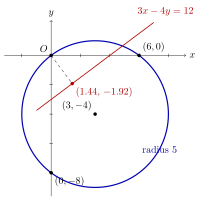
Knowledge Check 12.2.2: A circle from its equation
Describe the graph of \(r=-3\sin\theta\): give its center and radius.
Pause and think 12.2.1: Multiplying by \(r\)
In Example 12.2.12(a) we multiplied the equation by \(r\), and Theorem 12.2.9(2) says that this may add the origin. No point was added there. Give an equation whose graph does not contain the origin, and show that multiplying it by \(r\) does add the origin.
Answer and discussion
Take \(r=1\), the unit circle, which does not contain the origin. Multiplying by \(r\) gives \(r^2=r\), that is \(r(r-1)=0\), whose graph contains all the points with \(r=0\): the origin is added. This is Theorem 12.2.9(2) with \(E=r-1\): \(rE=r(r-1)\).
A polar curve is a parametric curve¶
A polar equation \(r=f(\theta)\) describes a curve in the plane, and Section 12.1 gave us the language for curves: parameter, orientation, tangent line. The two descriptions are connected by one theorem.
Theorem 12.2.13: A polar curve is a parametric curve
Let \(f\) be defined on an interval \(I\) (possibly all of \(\R\)). The points \(P(f(\theta),\theta)\), \(\theta\) in \(I\), form the parametric curve (Definition 12.1.1)
with \(\theta\) as the parameter; its positive orientation is the direction of increasing \(\theta\). If \(f\) is differentiable, then
and \(x'(\theta)^2+y'(\theta)^2=f(\theta)^2+f'(\theta)^2\). If \(f(\theta_0)=0\) and \(f'(\theta_0)\ne0\), the curve passes through the origin at \(\theta=\theta_0\) and its tangent line there is the line \(\theta=\theta_0\).
Proof. The coordinates are those of Theorem 12.2.2 with \(r=f(\theta)\). By the Product Rule, \(x'=f'\cos\theta-f\sin\theta\) and \(y'=f'\sin\theta+f\cos\theta\). Squaring and adding,
since the two cross terms cancel. Now let \(f(\theta_0)=0\) and \(f'(\theta_0)\ne0\). Then \(x(\theta_0)=y(\theta_0)=0\), so the curve is at \(O\), and the velocity is \(\bigl(x'(\theta_0),y'(\theta_0)\bigr)=f'(\theta_0)\,(\cos\theta_0,\sin\theta_0)\ne(0,0)\). By Theorem 12.1.12, if \(x'(\theta_0)\ne0\) (that is, \(\cos\theta_0\ne0\)) the tangent line has slope \(\frac{y'}{x'}=\frac{\sin\theta_0}{\cos\theta_0}=\tan\theta_0\) and passes through \(O\); if \(x'(\theta_0)=0\) the tangent line is vertical through \(O\). In both cases it is the line through \(O\) at angle \(\theta_0\), the graph of \(\theta=\theta_0\) (Theorem 12.2.10(1)). ◻ ∎
When \(f(\theta_0)=0=f'(\theta_0)\) the velocity vanishes and the theorem says nothing; the cardioid of the next pages has such a point. The identity \(x'^2+y'^2=f^2+f'^2\) will matter when we measure lengths of polar curves; for now we use only the last statement, which tells us in which direction a curve leaves the origin.
Procedure 12.2.14: The Cartesian-to-polar method for graphing \(r=f(\theta)\)
-
Graph \(r=f(\theta)\) in an ordinary \(\theta r\)-plane over an interval of \(\theta\) that traces the whole curve (see Theorem 12.2.23 for how long such an interval must be).
-
Mark the zeros of \(f\) (the curve passes through the origin; by Theorem 12.2.13 it is tangent to the line \(\theta=\theta_0\) if \(f'(\theta_0)\ne0\)) and the extreme values of \(\abs f\) (the farthest points).
-
Where \(r>0\) the point is on the ray at angle \(\theta\). Where \(r<0\) it is on the opposite ray, at distance \(\abs r\).
-
Where \(\abs r\) increases the curve moves away from the origin; where it decreases, towards it. Follow the curve in the order of increasing \(\theta\), and draw the arrows.
Example 12.2.15: A limaçon with an inner loop
Graph \(r=1+2\cos\theta\) for \(0\le\theta\le2\pi\) with the Cartesian-to-polar method. Find where it meets the origin, the tangent lines there, and any symmetry.
Solution. The \(\theta r\)-graph. \(f(\theta)=1+2\cos\theta\) is a cosine curve with amplitude \(2\), shifted up \(1\): \(f(0)=3\) is the maximum and \(f(\pi)=-1\) the minimum. Zeros. \(1+2\cos\theta=0\) gives \(\cos\theta=-\frac12\), so \(\theta=\frac{2\pi}3\) and \(\theta=\frac{4\pi}3\) in \([0,2\pi]\). Sign. \(f>0\) for \(0\le\theta<\frac{2\pi}3\) and for \(\frac{4\pi}3<\theta\le2\pi\), and \(f<0\) for \(\frac{2\pi}3<\theta<\frac{4\pi}3\). Table.
Transfer to the polar plane. For \(0\le\theta<\frac{2\pi}3\), \(r>0\) decreases from \(3\) to \(0\): the curve starts at \(A=(3,0)\), passes \(B=2\left(\cos\frac\pi3,\sin\frac\pi3\right)=(1,\sqrt3)\) and \(C=(0,1)\), and reaches the origin at \(D\) along the ray \(\theta=\frac{2\pi}3\). For \(\frac{2\pi}3<\theta<\frac{4\pi}3\) we have \(r<0\), so the points are on the opposite rays, with angles between \(\frac{2\pi}3+\pi=\frac{5\pi}3\) and \(\frac{4\pi}3+\pi=\frac{7\pi}3\equiv\frac\pi3\), which is to the right of the origin. The distance \(\abs r\) grows from \(0\) to \(1\) at \(\theta=\pi\) and shrinks back to \(0\): the farthest point of this inner loop is \(E=P(-1,\pi)=(-1\cdot\cos\pi,-1\cdot\sin\pi)=(1,0)\). At \(F\) the curve is again at the origin. For \(\frac{4\pi}3<\theta\le2\pi\) we have \(r>0\), increasing from \(0\) to \(3\): through \(G=(0,-1)\) and \(H=2\left(\cos\frac{5\pi}3,\sin\frac{5\pi}3\right)=(1,-\sqrt3)\) back to \(A\). Tangents at the origin. \(f'(\theta)=-2\sin\theta\), and \(f'\left(\frac{2\pi}3\right)=-\sqrt3\ne0\), \(f'\left(\frac{4\pi}3\right)=\sqrt3\ne0\). By Theorem 12.2.13 the tangent lines at \(O\) are \(\theta=\frac{2\pi}3\) (slope \(\tan\frac{2\pi}3=-\sqrt3\)) and \(\theta=\frac{4\pi}3\) (slope \(\tan\frac{4\pi}3=\sqrt3\)). Symmetry. \(f(-\theta)=f(\theta)\), so the curve is symmetric about the \(x\)-axis (Theorem 12.2.21 below), which agrees with the picture.
Answer. A limaçon with an inner loop: an outer loop through \((3,0)\), \((0,\pm1)\) and the origin, and an inner loop from the origin to \((1,0)\) and back, traced for \(\frac{2\pi}3\le\theta\le\frac{4\pi}3\) (Figure below).
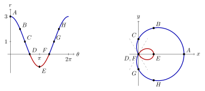
The tangent lines at the origin, \(\theta=\frac{2\pi}3\) and \(\theta=\frac{4\pi}3\), are the dashed lines. The left graph and the right curve are the same information: the red part of the \(\theta r\)-graph, where \(r<0\), becomes the inner loop.
Pause and think 12.2.2: An inner loop on the right
The inner loop of \(r=1+2\cos\theta\) is traced for \(\frac{2\pi}3\le\theta\le\frac{4\pi}3\), angles that point into the left half-plane. Why does the loop lie in the right half-plane?
Answer and discussion
For \(\frac{2\pi}3<\theta<\frac{4\pi}3\) the radial coordinate is negative, so each point is on the ray opposite to the direction \(\theta\), that is at the angle \(\theta+\pi\). As \(\theta\) runs from \(\frac{2\pi}3\) to \(\frac{4\pi}3\), \(\theta+\pi\) runs from \(\frac{5\pi}3\) to \(\frac{7\pi}3\), angles that point into the right half-plane (they are within \(\frac\pi3\) of the positive \(x\)-axis). At the middle, \(\theta=\pi\), the point is \(P(-1,\pi)=(1,0)\).
The limaçon family¶
Theorem 12.2.16: Limaçons
Let \(a>0\), \(b>0\) and consider the curve \(r=a+b\cos\theta\) (the curve \(r=a+b\sin\theta\) is this one rotated through \(\frac\pi2\)). It is symmetric about the \(x\)-axis, and its shape depends on \(\frac ab\):
-
\(a<b\): inner loop. \(r\) changes sign, so the curve passes through \(O\) at \(\cos\theta=-\frac ab\) and has an inner loop traced where \(r<0\).
-
\(a=b\): cardioid. \(r\ge0\) and \(r=0\) only at \(\theta=\pi\), where the velocity is zero: a cusp at \(O\).
-
\(b<a<2b\): dimple. \(r>0\), and along the upper half \(0\le\theta\le\pi\) the coordinate \(x\) first decreases, then increases.
-
\(a\ge2b\): oval. \(r>0\) and \(x\) decreases steadily along the upper half.
Proof. \(f(\theta)=a+b\cos\theta\) is even, so the curve is symmetric about the \(x\)-axis (Theorem 12.2.21 below). The zeros of \(f\) are the solutions of \(\cos\theta=-\frac ab\), which exist exactly when \(a\le b\). (1) If \(a<b\), then \(f\) is positive near \(\theta=0\) and negative at \(\theta=\pi\) (\(f(\pi)=a-b<0\)), so it changes sign at the zeros \(\theta=\pm\theta_0\), \(\theta_0=\arccos\left(-\frac ab\right)\), where \(f'(\theta)=-b\sin\theta\ne0\); for \(\theta_0<\theta<2\pi-\theta_0\) we have \(r<0\), and these points form the inner loop (Procedure 12.2.14). (2) If \(a=b\), then \(f(\theta)=b(1+\cos\theta)=2b\cos^2\frac\theta2\ge0\), which is \(0\) only when \(\cos\frac\theta2=0\), that is at \(\theta=\pi\) (mod \(2\pi\)). There \(f(\pi)=0\) and \(f'(\pi)=-b\sin\pi=0\), so the velocity \((x',y')=(0,0)\) by Theorem 12.2.13. (3), (4) If \(a>b\) then \(f(\theta)\ge a-b>0\). On the curve \(x=r\cos\theta=a\cos\theta+b\cos^2\theta\), hence
On \(0<\theta<\pi\), \(\sin\theta>0\), so the sign of \(\frac{dx}{d\theta}\) is the sign of \(-(a+2b\cos\theta)\). If \(a\ge2b\) then \(a+2b\cos\theta>a-2b\ge0\) for \(\cos\theta>-1\), so \(x\) decreases on \([0,\pi]\): (4). If \(a<2b\), then \(a+2b\cos\theta=0\) at \(\cos\theta=-\frac a{2b}\in(-1,0)\), an angle \(\theta_1\) in \(\left(\frac\pi2,\pi\right)\), positive before \(\theta_1\) and negative after: so \(\frac{dx}{d\theta}<0\) on \((0,\theta_1)\) and \(>0\) on \((\theta_1,\pi)\), and \(x\) decreases and then increases: (3). ◻ ∎
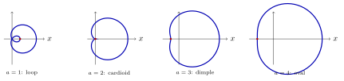
The four curves are \(r=a+2\cos\theta\) with \(a=1,2,3,4\). The red point is the one at \(\theta=\pi\), where \(r=a-2\): \((1,0)\) (tip of the inner loop), the cusp \(O\), the dimple \((-1,0)\) and the point \((-2,0)\).
Roses¶
Theorem 12.2.17: Roses
Let \(m\) be a positive integer and \(a\ne0\). The graph of \(r=a\cos m\theta\) is a rose made of congruent petals, each a closed loop through the origin whose tip is at distance \(\abs a\) from \(O\); adjacent petals meet only at \(O\). There are \(m\) petals if \(m\) is odd (traced once for \(0\le\theta\le\pi\)) and \(2m\) petals if \(m\) is even (traced once for \(0\le\theta\le2\pi\)).
The tips are at the angles \(\frac{n\pi}m\) with \(n\) even if \(m\) is odd (and \(a>0\)), and with \(n\) any integer if \(m\) is even. The graph of \(r=a\sin m\theta\) is the same rose rotated through the angle \(\frac\pi{2m}\).
Proof. Let \(f(\theta)=a\cos m\theta\) and, for an integer \(j\), let \(I_j=\left[\frac{j\pi}m-\frac\pi{2m},\frac{j\pi}m+\frac\pi{2m}\right]\); these intervals have length \(\frac\pi m\) and cover \(\R\). The \(j\)-th arch is \(A_j=\{P(f(\theta),\theta):\theta\in I_j\}\). For \(\theta=\frac{j\pi}m+s\) with \(\abs s\le\frac\pi{2m}\) we have \(\cos m\theta=\cos(j\pi+ms)=(-1)^j\cos ms\), and \(\cos ms\ge0\), so \(f(\theta)=(-1)^ja\cos ms\): the sign of \(f\) on \(I_j\) is the constant sign of \((-1)^ja\), \(\abs f=\abs a\cos ms\) is \(0\) at the ends of \(I_j\) and equals \(\abs a\) at \(s=0\). Each arch is a petal. A point of \(A_j\) is on the ray at angle \(\theta=\frac{j\pi}m+s\) if \((-1)^ja>0\), and on the opposite ray if \((-1)^ja<0\). In both cases the point is on the ray at angle \(\varphi_j+s\), where \(\varphi_j=\frac{j\pi}m\) if \((-1)^ja>0\) and \(\varphi_j=\frac{j\pi}m+\pi\) otherwise, at distance \(\abs a\cos ms\). So \(A_j\) is the polar graph \(\rho=\abs a\cos ms\) over the sector of directions \(\varphi_j-\frac\pi{2m}\le\varphi\le\varphi_j+\frac\pi{2m}\): a simple closed loop through \(O\) with its tip at distance \(\abs a\) in the direction \(\varphi_j\). Two arches with the same \(\varphi_j\) (mod \(2\pi\)) are the same set; two arches with different \(\varphi_j\) (mod \(2\pi\)) lie in sectors of width \(\frac\pi m\) whose directions differ by a nonzero multiple of \(\frac\pi m\), so they meet only at \(O\). Counting. Take \(a>0\) (for \(a<0\) every \(\varphi_j\) is shifted by \(\pi\), which does not change the count). Then \(\varphi_j=\frac{n_j\pi}m\) with \(n_j=j\) for even \(j\) and \(n_j=j+m\) for odd \(j\), taken modulo \(2m\).
-
\(m\) even. Then \(n_j\equiv j\) modulo \(2\) for all \(j\). As \(j=0,1,\dots,2m-1\) runs through a full set of residues modulo \(2m\), so does \(n_j\): there are \(2m\) different directions and so \(2m\) petals. The arches \(A_0,\dots,A_{2m-1}\) fill the \(\theta\)-interval \(\left[-\frac\pi{2m},2\pi-\frac\pi{2m}\right]\) of length \(2\pi\), and \(f\) has period \(2\pi\).
-
\(m\) odd. Then \(n_j\) is even for all \(j\) (for odd \(j\), \(j+m\) is even), so there are at most \(m\) different directions. Moreover \(f(\theta+\pi)=a\cos(m\theta+m\pi)=-f(\theta)\), so \(P(f(\theta+\pi),\theta+\pi)=P(-f(\theta),\theta+\pi)=P(f(\theta),\theta)\) by Theorem 12.2.3: the curve repeats after \(\pi\). The arches \(A_0,\dots,A_{m-1}\) fill an interval of length \(\pi\), and their numbers are \(n_j=j\) for the even \(j\le m-1\) (that is \(\frac{m+1}2\) values) and \(n_j=j+m\in\{m+1,\dots,2m-1\}\) for the odd \(j\le m-1\) (\(\frac{m-1}2\) values): all different, so \(m\) petals.
Sine. \(\sin m\theta=\cos\left(m\theta-\frac\pi2\right)=\cos\bigl(m(\theta-\frac\pi{2m})\bigr)\), so \(P(r,\theta)\) is on the cosine rose exactly when \(P\left(r,\theta+\frac\pi{2m}\right)\) is on \(r=a\sin m\theta\): the second graph is the first rotated through \(\frac\pi{2m}\). ◻ ∎
Example 12.2.18: A three-petal rose
Graph \(r=4\cos3\theta\). Find the number of petals, the tips, the interval of \(\theta\) traced by each petal, and the tangent lines at the origin.
Solution. Here \(m=3\) is odd, so by Theorem 12.2.17 there are \(3\) petals and the whole curve is traced for \(0\le\theta\le\pi\). Zeros. \(\cos3\theta=0\) for \(3\theta=\frac\pi2+k\pi\), that is \(\theta=\frac\pi6+\frac{k\pi}3\): in \([0,\pi]\), \(\theta=\frac\pi6,\frac\pi2,\frac{5\pi}6\). Tips. \(\abs r=4\) when \(\cos3\theta=\pm1\), at \(\theta=0,\frac\pi3,\frac{2\pi}3\): \(r=4,-4,4\). The tip at \(\theta=0\) is \((4,0)\). The tip at \(\theta=\frac\pi3\) has \(r=-4\), so it is \(P\left(-4,\frac\pi3\right)=P\left(4,\frac{4\pi}3\right)=\left(4\cos\frac{4\pi}3,4\sin\frac{4\pi}3\right)=(-2,-2\sqrt3)\). The tip at \(\theta=\frac{2\pi}3\) is \(\left(4\cos\frac{2\pi}3,4\sin\frac{2\pi}3\right)=(-2,2\sqrt3)\). The three tips are \(4\) units from \(O\), in the directions \(0\), \(\frac{2\pi}3\), \(\frac{4\pi}3\), equally spaced. Petals and intervals. Between consecutive zeros \(f\) has constant sign: for \(-\frac\pi6\le\theta\le\frac\pi6\), \(r\ge0\): the petal around the \(x\)-axis (tip \((4,0)\)). For \(\frac\pi6\le\theta\le\frac\pi2\), \(r\le0\): the points are on the opposite rays, with angles between \(\frac{7\pi}6\) and \(\frac{3\pi}2\): the petal with tip \((-2,-2\sqrt3)\). For \(\frac\pi2\le\theta\le\frac{5\pi}6\), \(r\ge0\): the petal with tip \((-2,2\sqrt3)\). For \(\frac{5\pi}6\le\theta\le\frac{7\pi}6\), \(r\le0\) and the first petal is traced again (period \(\pi\)). Tangent lines at \(O\). \(f'(\theta)=-12\sin3\theta\), so \(f'\left(\frac\pi6\right)=-12\), \(f'\left(\frac\pi2\right)=12\), \(f'\left(\frac{5\pi}6\right)=-12\), all nonzero. By Theorem 12.2.13 the tangent lines at the origin are \(\theta=\frac\pi6\), \(\theta=\frac\pi2\) and \(\theta=\frac{5\pi}6\): the lines with slopes \(\frac1{\sqrt3}\), vertical, and \(-\frac1{\sqrt3}\). Each petal is bounded by two of these lines (Figure below).
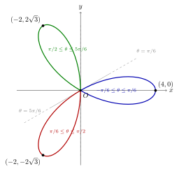
Knowledge Check 12.2.3: Petals and periods
How many petals do \(r=3\sin7\theta\) and \(r=2\cos6\theta\) have, and over what interval of \(\theta\) is each traced once?
Lemniscates and spirals¶
Example 12.2.19: A lemniscate
Graph \(r^2=4\cos2\theta\). Find the values of \(\theta\) for which the curve exists, the tips, the tangent lines at the origin, a Cartesian equation, and the symmetries.
Solution. Existence. \(r^2\ge0\), so \(\cos2\theta\ge0\): \(-\frac\pi4\le\theta\le\frac\pi4\) (and the same shifted by \(\pi\); no points exist for \(\frac\pi4<\theta<\frac{3\pi}4\)). For such \(\theta\), \(r=\pm2\sqrt{\cos2\theta}\). Two loops. The sign \(+\) gives the points \(P(2\sqrt{\cos2\theta},\theta)\), a loop in the directions \(-\frac\pi4\le\theta\le\frac\pi4\) (right of the origin). The sign \(-\) gives \(P(-2\sqrt{\cos2\theta},\theta)=P(2\sqrt{\cos2\theta},\theta+\pi)\), the mirror loop to the left. Tips. The largest \(\abs r\) is at \(\theta=0\): \(r=\pm2\), the points \((\pm2,0)\). At the origin. \(r=0\) at \(\theta=\pm\frac\pi4\); the curve is tangent there to the lines \(\theta=\pm\frac\pi4\), that is \(y=\pm x\). (Since \(r=2\sqrt{\cos2\theta}\) near these angles, Theorem 12.2.13 does not apply directly because \(f'\) is not finite there; the lines \(\theta=\pm\frac\pi4\) are nonetheless the directions in which \(r\to0\), so they are the directions in which the loops leave the origin.) Cartesian equation. Multiply by \(r^2\): \(r^4=4r^2\cos2\theta=4r^2\left(\cos^2\theta-\sin^2\theta\right)=4\left(x^2-y^2\right)\), so
The multiplication by \(r^2\) can add only the origin (Theorem 12.2.9(2)), and the origin is on the lemniscate, so the two graphs agree. Check. \(\theta=\frac\pi6\): \(r=\pm2\sqrt{\cos\frac\pi3}=\pm\sqrt2\); the point \(\left(\sqrt2\cos\frac\pi6,\sqrt2\sin\frac\pi6\right)=\left(\frac{\sqrt6}2,\frac{\sqrt2}2\right)\approx(1.22,0.71)\) satisfies \((x^2+y^2)^2=\left(\frac64+\frac24\right)^2=4\) and \(4(x^2-y^2)=4\left(\frac64-\frac24\right)=4\). Symmetry. The equation \(r^2=4\cos2\theta\) is unchanged when \(r\) is replaced by \(-r\) (symmetry about the origin) and when \(\theta\) is replaced by \(-\theta\) (\(\cos\) is even: symmetry about the \(x\)-axis); hence also about the \(y\)-axis.
Answer. A figure eight with tips \((\pm2,0)\), tangent to \(y=\pm x\) at the origin, \((x^2+y^2)^2=4(x^2-y^2)\) (Figure below).
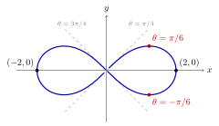
Example 12.2.20: Two spirals
(a) Describe the spiral of Archimedes \(r=\theta\), \(\theta\ge0\). (b) Describe \(r=\frac1\theta\) for \(\theta>0\), the hyperbolic spiral; show that it has a horizontal asymptote.
Solution. (a) By Theorem 12.2.13 the curve is \(x=\theta\cos\theta\), \(y=\theta\sin\theta\). The radial distance grows with \(\theta\) while the direction turns counterclockwise, so the curve spirals outward. Points: \(\theta=0\): \(O\); \(\theta=\frac\pi2\): \(\left(0,\frac\pi2\right)\); \(\theta=\pi\): \((-\pi,0)\); \(\theta=\frac{3\pi}2\): \(\left(0,-\frac{3\pi}2\right)\); \(\theta=2\pi\): \((2\pi,0)\). Successive crossings of the positive \(x\)-axis are at \(\theta=2\pi k\), \(r=2\pi k\), so the turns are always \(2\pi\) apart. (For \(\theta<0\) the point \(P(\theta,\theta)\) is \((\theta\cos\theta,\theta\sin\theta)\), which is the reflection of the point for \(-\theta\) in the \(y\)-axis: the other arm of the spiral.) (b) Here \(x=\frac{\cos\theta}\theta\), \(y=\frac{\sin\theta}\theta\). As \(\theta\to0^+\), \(r=\frac1\theta\to\infty\), \(x=\frac{\cos\theta}\theta\to+\infty\), while \(y=\frac{\sin\theta}\theta\to1\) by the basic limit of Calculus I. So the curve approaches the horizontal line \(y=1\) as it goes out to the right: the line \(y=1\) is a horizontal asymptote. As \(\theta\to\infty\), \(r\to0\) and the curve winds around the origin infinitely often without reaching it. Points: \(\theta=\frac\pi2\): \(\left(0,\frac2\pi\right)\); \(\theta=\pi\): \(\left(-\frac1\pi,0\right)\); \(\theta=2\pi\): \(\left(\frac1{2\pi},0\right)\).
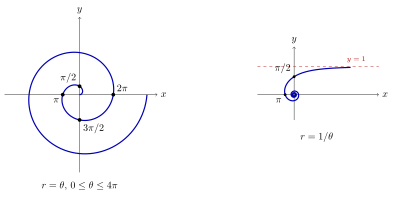
Symmetry¶
Theorem 12.2.21: Symmetry tests
Let \(\mathcal C\) be the graph of a polar equation \(E(r,\theta)=0\). If the equation is satisfied by \((r,\theta)\) whenever it is satisfied by one of the replacements below, then \(\mathcal C\) has the stated symmetry.
| about the \(x\)-axis: | \((r,-\theta)\) or \((-r,\pi-\theta)\) |
| about the \(y\)-axis: | \((r,\pi-\theta)\) or \((-r,-\theta)\) |
| about the origin: | \((-r,\theta)\) or \((r,\theta+\pi)\) |
These tests are sufficient, not necessary: a curve can be symmetric although the particular replacement you try does not return the equation you started with.
Proof. Let \(P=(x,y)=(r\cos\theta,r\sin\theta)\) be on \(\mathcal C\), with \((r,\theta)\) satisfying \(E=0\). \(x\)-axis. The reflection of \(P\) is \((x,-y)=(r\cos\theta,-r\sin\theta)\). Since \(\cos(-\theta)=\cos\theta\) and \(\sin(-\theta)=-\sin\theta\), this is \(P(r,-\theta)\). Also \((-r)\cos(\pi-\theta)=r\cos\theta\) and \((-r)\sin(\pi-\theta)=-r\sin\theta\), so it is \(P(-r,\pi-\theta)\). If the equation holds at \((r,-\theta)\) or at \((-r,\pi-\theta)\) whenever it holds at \((r,\theta)\), the reflection is on \(\mathcal C\). \(y\)-axis. The reflection is \((-x,y)=(-r\cos\theta,r\sin\theta)\). Since \(\cos(\pi-\theta)=-\cos\theta\) and \(\sin(\pi-\theta)=\sin\theta\), it is \(P(r,\pi-\theta)\); since \((-r)\cos(-\theta)=-r\cos\theta\) and \((-r)\sin(-\theta)=r\sin\theta\), it is also \(P(-r,-\theta)\). Origin. The reflection is \((-x,-y)=(-r\cos\theta,-r\sin\theta)\), which is \(P(-r,\theta)\) and, since \(\cos(\theta+\pi)=-\cos\theta\) and \(\sin(\theta+\pi)=-\sin\theta\), also \(P(r,\theta+\pi)\). In each case the reflected point has a representation satisfying \(E=0\), so it is on \(\mathcal C\) (Definition 12.2.8). ◻ ∎
Example 12.2.22: Testing symmetry
Use Theorem 12.2.21 on \(r=\sin2\theta\).
Solution. \(x\)-axis. Replace \((r,\theta)\) by \((-r,\pi-\theta)\): the equation becomes \(-r=\sin(2\pi-2\theta)=-\sin2\theta\) (since \(\sin(2\pi-u)=-\sin u\)), which is equivalent to \(r=\sin2\theta\). So the curve is symmetric about the \(x\)-axis. (The first replacement, \((r,-\theta)\), gives \(r=-\sin2\theta\), which is not the original equation; this test fails, but the second succeeds.) \(y\)-axis. Replace by \((-r,-\theta)\): \(-r=\sin(-2\theta)=-\sin2\theta\), equivalent to the original. Symmetric about the \(y\)-axis. Origin. Replace by \((r,\theta+\pi)\): \(r=\sin(2\theta+2\pi)=\sin2\theta\), the original. Symmetric about the origin. This agrees with Theorem 12.2.17: \(r=\sin2\theta\) is a four-petal rose.
How far must \(\theta\) run?¶
Theorem 12.2.23: Tracing the whole curve
Let \(f\) be defined for all \(\theta\) and \(P>0\).
-
If \(f(\theta+P)=f(\theta)\) for all \(\theta\) and \(P\) is a multiple of \(2\pi\), the curve \(r=f(\theta)\) is traced completely on any \(\theta\)-interval of length \(P\) (\(P=2\pi\) is the smallest case).
-
If \(f(\theta+P)=-f(\theta)\) for all \(\theta\) and \(P\) is an odd multiple of \(\pi\), the same is true.
-
For \(r=\cos\frac{p\theta}q\) or \(r=\sin\frac{p\theta}q\) (\(p,q\) positive integers with no common factor), the whole curve is traced on any interval of length \(\pi q\) if \(p\) and \(q\) are both odd, and on any interval of length \(2\pi q\) otherwise.
Proof. (1) \(P(f(\theta+P),\theta+P)=P(f(\theta),\theta+P)=P(f(\theta),\theta)\) because \(P\) is a multiple of \(2\pi\) (Theorem 12.2.3). So the point for \(\theta+P\) is the point for \(\theta\); any \(\theta\) is congruent, by a multiple of \(P\), to a \(\theta\) in the given interval, and nothing new appears. (2) \(P(f(\theta+P),\theta+P)=P(-f(\theta),\theta+P)=P(-f(\theta),\theta+\pi)=P(f(\theta),\theta)\), using \(P-\pi\) a multiple of \(2\pi\) and then Theorem 12.2.3 twice (once to drop the multiple of \(2\pi\), once for the pair \((-r,\theta+\pi)\)). (3) Let \(f(\theta)=\cos\frac{p\theta}q\) (the sine case is identical). If \(p,q\) are odd, \(f(\theta+\pi q)=\cos\left(\frac{p\theta}q+p\pi\right)=-\cos\frac{p\theta}q=-f(\theta)\) because \(p\) is odd, and \(\pi q\) is an odd multiple of \(\pi\) because \(q\) is odd: case (2). Otherwise take \(P=2\pi q\): \(f(\theta+2\pi q)=\cos\left(\frac{p\theta}q+2\pi p\right)=f(\theta)\), a multiple of \(2\pi\): case (1). ◻ ∎
The theorem gives an interval that suffices; it does not claim that no shorter interval would do (for the rose \(r=\cos m\theta\) with \(m\) even the full \(2\pi\) is needed; Theorem 12.2.17).
Example 12.2.24: A curve that closes after two turns
Graph \(r=\cos\frac{3\theta}2\). Over what interval is it traced, and where is it for \(\theta=0\) and \(\theta=2\pi\)?
Solution. Here \(p=3\), \(q=2\) have no common factor and \(q\) is even, so Theorem 12.2.23(3) gives the interval \(0\le\theta\le4\pi\). Check by hand: \(f(\theta+4\pi)=\cos\left(\frac{3\theta}2+6\pi\right)=f(\theta)\). After one turn the curve has not closed: \(f(\theta+2\pi)=\cos\left(\frac{3\theta}2+3\pi\right)=-f(\theta)\), and the point for \(\theta+2\pi\) is \(P(-f(\theta),\theta)\), the point of the opposite ray, which differs from \(P(f(\theta),\theta)\) whenever \(f(\theta)\ne0\). So the second turn draws a different part of the curve. Key points. \(\theta=0\): \(r=1\), the point \((1,0)\). \(\theta=2\pi\): \(r=\cos3\pi=-1\), the point \(P(-1,2\pi)=(-\cos2\pi,-\sin2\pi)=(-1,0)\). Zeros. \(\frac{3\theta}2=\frac\pi2+k\pi\) gives \(\theta=\frac\pi3,\pi,\frac{5\pi}3,\frac{7\pi}3,3\pi,\frac{11\pi}3\) in \([0,4\pi]\): six passes through the origin. Symmetry. \(f\) is even, so the curve is symmetric about the \(x\)-axis. The curve is the figure below.
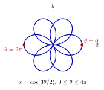
Where two polar curves meet¶
Finding intersections is where the non-uniqueness of polar coordinates does its damage. Solving \(f(\theta)=g(\theta)\) finds the points where both curves reach the same point at the same angle; it can miss points that the two curves reach with different representations.
Theorem 12.2.25: Intersections of polar curves
Let \(f\) and \(g\) have period \(2\pi\). A point \(P\ne O\) lies on both \(r=f(\theta)\) and \(r=g(\theta)\) if and only if there is a \(\theta\) with
and \(P=P(f(\theta),\theta)\). The origin is on a curve if and only if its function has a zero; it is on both curves when each of \(f\) and \(g\) has a zero, which is not detected by (A) or (B) unless the zeros occur at related angles.
Proof. (\(\Leftarrow\)) Under (A), \(P(f(\theta),\theta)=P(g(\theta),\theta)\) is on both curves. Under (B), \(P(f(\theta),\theta)=P(-f(\theta),\theta+\pi)\) (Theorem 12.2.3) \(=P\bigl(g(\theta+\pi),\theta+\pi\bigr)\), which is on \(r=g(\theta)\) as well. (\(\Rightarrow\)) Let \(P\ne O\) be on both curves. Then \(P\) has a representation \((r_1,\theta_1)\) with \(r_1=f(\theta_1)\) and a representation \((r_2,\theta_2)\) with \(r_2=g(\theta_2)\). By Theorem 12.2.3, either \(r_2=r_1\) and \(\theta_2=\theta_1+2\pi k\), or \(r_2=-r_1\) and \(\theta_2=\theta_1+\pi+2\pi k\) (\(k\) an integer). In the first case \(g(\theta_1)=g(\theta_2)=r_2=r_1=f(\theta_1)\) by periodicity: (A) at \(\theta_1\). In the second case \(g(\theta_1+\pi)=g(\theta_2)=r_2=-r_1=-f(\theta_1)\): (B) at \(\theta_1\). The last sentence is the definition of the graph and the fact that \(r=0\) represents \(O\). ◻ ∎
Procedure 12.2.26: Intersections of \(r=f(\theta)\) and \(r=g(\theta)\)
-
Solve (A) \(f(\theta)=g(\theta)\) and (B) \(f(\theta)=-g(\theta+\pi)\) for \(\theta\) in an interval of length \(2\pi\).
-
Find the points \(P(f(\theta),\theta)\) for each solution; remove duplicates (compare Cartesian coordinates).
-
Check the origin separately: solve \(f(\theta)=0\) and \(g(\theta)=0\).
-
Draw both curves to confirm the count.
Example 12.2.27: Two cardioids: a hidden intersection
Find all intersections of \(r=1+\cos\theta\) and \(r=1-\cos\theta\).
Solution. \(f=1+\cos\theta\), \(g=1-\cos\theta\), both of period \(2\pi\). (A). \(1+\cos\theta=1-\cos\theta\) gives \(2\cos\theta=0\), so \(\theta=\frac\pi2\) or \(\frac{3\pi}2\), with \(r=1\): the points \((0,1)\) and \((0,-1)\). (B). \(g(\theta+\pi)=1-\cos(\theta+\pi)=1+\cos\theta\), so (B) reads \(1+\cos\theta=-(1+\cos\theta)\), that is \(\cos\theta=-1\), \(\theta=\pi\), \(r=f(\pi)=0\): the origin. Origin. \(f(\pi)=0\) and \(g(0)=0\): the origin is on both curves (reached at different angles, \(\pi\) and \(0\)). Equation (A) alone found only two points, and would have missed the origin. Answer. \((0,1)\), \((0,-1)\) and the origin.
Example 12.2.28: A rose and a circle: all eight points
Find all intersections of \(r=2\cos2\theta\) and \(r=1\).
Solution. \(g=1\) is constant, so \(g(\theta+\pi)=1\). (A). \(2\cos2\theta=1\), \(\cos2\theta=\frac12\), \(2\theta=\pm\frac\pi3+2\pi k\), so \(\theta=\pm\frac\pi6+\pi k\): in \([0,2\pi)\), \(\theta=\frac\pi6,\frac{5\pi}6,\frac{7\pi}6,\frac{11\pi}6\), each with \(r=1\). (B). \(2\cos2\theta=-1\), \(\cos2\theta=-\frac12\), \(2\theta=\pm\frac{2\pi}3+2\pi k\), so \(\theta=\pm\frac\pi3+\pi k\): \(\theta=\frac\pi3,\frac{2\pi}3,\frac{4\pi}3,\frac{5\pi}3\), each with \(r=f(\theta)=-1\); the points are \(P(-1,\theta)=P\left(1,\theta+\pi\right)\), on the unit circle at the angles \(\frac{4\pi}3,\frac{5\pi}3,\frac\pi3,\frac{2\pi}3\). Together the eight points are on the unit circle at the angles \(\frac\pi6,\frac\pi3,\frac{2\pi}3,\frac{5\pi}6,\frac{7\pi}6,\frac{4\pi}3,\frac{5\pi}3,\frac{11\pi}6\). A solution of (A) alone would give only four. Origin. The rose passes through \(O\) but the circle \(r=1\) does not, so \(O\) is not an intersection. Check with the picture: each of the four petals leaves the circle through two points.
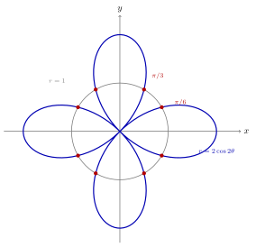
Tangent lines to polar curves¶
Theorem 12.2.29: Slope of a polar curve
Let \(r=f(\theta)\) with \(f\) differentiable. At a point where \(x'(\theta)=f'\cos\theta-f\sin\theta\ne0\), the slope of the tangent line is
The tangent is horizontal where the numerator is \(0\) and the denominator is not, and vertical where the denominator is \(0\) and the numerator is not.
Proof. By Theorem 12.2.13 the curve is parametric with \(x'=f'\cos\theta-f\sin\theta\) and \(y'=f'\sin\theta+f\cos\theta\). By the slope formula for parametric curves (Theorem 12.1.12), \(\frac{dy}{dx}=\frac{y'}{x'}\) wherever \(x'\ne0\). The statements on horizontal and vertical tangents are the same formula read at a zero of \(y'\) or \(x'\). ◻ ∎
Example 12.2.30: Tangent lines of a cardioid
Find the slope of the tangent line to \(r=1+\cos\theta\) at \(\theta=\frac\pi3\) and at \(\theta=\frac\pi2\), and give the tangent lines.
Solution. \(f=1+\cos\theta\), \(f'=-\sin\theta\). Numerator. \(y'=f'\sin\theta+f\cos\theta=-\sin^2\theta+\cos\theta+\cos^2\theta=\cos\theta+\cos2\theta\), using \(\cos^2\theta-\sin^2\theta=\cos2\theta\). Denominator. \(x'=f'\cos\theta-f\sin\theta=-\sin\theta\cos\theta-\sin\theta-\sin\theta\cos\theta=-\sin\theta(1+2\cos\theta)\). At \(\theta=\frac\pi3\). \(y'=\frac12+\cos\frac{2\pi}3=\frac12-\frac12=0\) and \(x'=-\frac{\sqrt3}2\cdot2=-\sqrt3\ne0\). The slope is \(0\): horizontal tangent. The point has \(r=1+\frac12=\frac32\), so it is \(\left(\frac32\cos\frac\pi3,\frac32\sin\frac\pi3\right)=\left(\frac34,\frac{3\sqrt3}4\right)\) and the tangent line is \(y=\frac{3\sqrt3}4\). At \(\theta=\frac\pi2\). \(y'=0+\cos\pi=-1\) and \(x'=-1\cdot(1+0)=-1\). The slope is \(\frac{-1}{-1}=1\). The point has \(r=1\), so it is \((0,1)\), and the tangent line is \(y-1=x\), that is \(y=x+1\). Check. From \(r=1+\cos\theta\) we get \(r^2=r+x\), so \(r=r^2-x\) and, squaring the relation \(r=r^2-x\), the Cartesian equation \((x^2+y^2-x)^2=x^2+y^2\). The point \((0,1)\) gives \((1-0)^2=1\), and \(\left(\frac34,\frac{3\sqrt3}4\right)\) has \(x^2+y^2=\frac9{16}+\frac{27}{16}=\frac94\), so \(\left(\frac94-\frac34\right)^2=\left(\frac32\right)^2=\frac94\).
Pause and think 12.2.3: Why (B) did not matter
In Example 12.2.28, equation (B) produced four points that (A) missed. Now take the three-petal rose \(r=\cos3\theta\) and the circle \(r=\frac12\). Show that every solution of (B) gives a point that is already found by (A) at the angle \(\theta+\pi\). (Hint: compare \(f(\theta+\pi)\) with \(f(\theta)\).)
Answer and discussion
For \(f(\theta)=\cos3\theta\) we have \(f(\theta+\pi)=\cos(3\theta+3\pi)=-\cos3\theta=-f(\theta)\). A solution of (B), \(f(\theta)=-\frac12\), therefore satisfies \(f(\theta+\pi)=-f(\theta)=\frac12=g(\theta+\pi)\): so \(\theta+\pi\) solves (A), and the point \(P\left(f(\theta+\pi),\theta+\pi\right)\) found by (A) is \(P\left(\frac12,\theta+\pi\right)=P\left(-\frac12,\theta\right)=P(f(\theta),\theta)\), the point that (B) produced. The same argument works for every \(f\) with \(f(\theta+\pi)=-f(\theta)\), which is the case for roses with an odd number of petals; for the rose with an even number \(f(\theta+\pi)=f(\theta)\) and (B) really is new.
Looking ahead¶
A polar equation is a recipe for a parametric curve, so the tools of Section 12.1 apply: Theorem 12.2.13 says that the speed of a polar curve is \(\sqrt{f^2+f'^2}\), which is exactly what an arc length integral needs, and the sectors of angle \(d\theta\) that sweep out a rose petal suggest how to compute areas. Both are the subject of Section 12.3 (area and arc length in polar coordinates). In Section 12.4 the circles, ellipses, parabolas and hyperbolas reappear as conic sections, and a single polar equation, \(r=\frac{ed}{1+e\cos\theta}\), will describe all of them. In a later chapter, polar coordinates in the plane are extended to cylindrical coordinates in space by adding a height, and to spherical coordinates by tilting the ray out of the plane; the conversion formulas of Theorem 12.2.2 carry over almost word for word.
Example bank¶
What’s in this bank. Twenty further worked examples, grouped by problem type and ordered from easiest to hardest within each group.
-
Points and conversions (Examples 12.2.31–12.2.33): a negative radial coordinate; Cartesian to polar in the second quadrant; a distance.
-
Equations, lines and circles (Examples 12.2.34–12.2.36): a circle from its polar equation; a line in polar form; a circle with a center away from the axes.
-
Graphing (Examples 12.2.37–12.2.39): a cardioid; a five-petal rose; a logarithmic spiral.
-
Symmetry and period (Examples 12.2.40–12.2.41): a lemniscate whose symmetry tests mostly fail; periods of two curves.
-
Tangent lines (Examples 12.2.42–12.2.44): a spiral; horizontal and vertical tangents of a cardioid; a rose.
-
Intersections (Examples 12.2.45–12.2.47): two circles; a circle and a cardioid meeting at the origin; a lemniscate and a circle.
Group 1: Points and conversions¶
Example 12.2.31: A negative radial coordinate
Convert \(\left(-3,-\frac{5\pi}6\right)\) to Cartesian coordinates, and give its representation with \(r>0\) and \(0\le\theta<2\pi\).
Solution. \(x=-3\cos\left(-\frac{5\pi}6\right)=-3\cdot\left(-\frac{\sqrt3}2\right)=\frac{3\sqrt3}2\) and \(y=-3\sin\left(-\frac{5\pi}6\right)=-3\cdot\left(-\frac12\right)=\frac32\), using \(\cos(-u)=\cos u\), \(\sin(-u)=-\sin u\), \(\cos\frac{5\pi}6=-\frac{\sqrt3}2\), \(\sin\frac{5\pi}6=\frac12\). The point is \(\left(\frac{3\sqrt3}2,\frac32\right)\). Its distance from \(O\) is \(\sqrt{\frac{27}4+\frac94}=\sqrt9=3\) and its angle satisfies \(\cos\theta=\frac{\sqrt3}2\), \(\sin\theta=\frac12\), so \(\theta=\frac\pi6\). Answer. \(\left(3,\frac\pi6\right)\). Check by Theorem 12.2.3: \(\left(-3,-\frac{5\pi}6\right)=\left(3,-\frac{5\pi}6+\pi\right)=\left(3,\frac\pi6\right)\).
Example 12.2.32: Cartesian to polar in the second quadrant
Give two polar representations of \((-2,2\sqrt3)\): one with \(r>0\) and one with \(r<0\), both with \(0\le\theta<2\pi\).
Solution. \(r=\sqrt{(-2)^2+(2\sqrt3)^2}=\sqrt{4+12}=4\). The point is in the second quadrant, so \(\theta=\arctan\frac{2\sqrt3}{-2}+\pi=-\frac\pi3+\pi=\frac{2\pi}3\) (the arctangent alone would give the fourth-quadrant angle \(-\frac\pi3\)). With \(r>0\): \(\left(4,\frac{2\pi}3\right)\). With \(r<0\): add \(\pi\) to the angle and reverse the sign: \(\left(-4,\frac{2\pi}3+\pi\right)=\left(-4,\frac{5\pi}3\right)\). Check. \(4\cos\frac{2\pi}3=-2\), \(4\sin\frac{2\pi}3=2\sqrt3\); \(-4\cos\frac{5\pi}3=-4\cdot\frac12=-2\), \(-4\sin\frac{5\pi}3=-4\cdot\left(-\frac{\sqrt3}2\right)=2\sqrt3\).
Example 12.2.33: A distance
Find the distance between \(P_1\left(2,\frac\pi3\right)\) and \(P_2(5,\pi)\).
Solution. By Theorem 12.2.7, \(d^2=2^2+5^2-2\cdot2\cdot5\cos\left(\frac\pi3-\pi\right)=29-20\cos\left(-\frac{2\pi}3\right)=29-20\cdot\left(-\frac12\right)=39\), so \(d=\sqrt{39}\approx6.245\). Check in Cartesian coordinates: \(P_1=(1,\sqrt3)\), \(P_2=(-5,0)\), and \(d^2=(1+5)^2+(\sqrt3-0)^2=36+3=39\).
Group 2: Equations, lines and circles¶
Example 12.2.34: A circle from its polar equation
Identify \(r=4\cos\theta+2\sin\theta\).
Solution. Multiply by \(r\) (Theorem 12.2.9(2)): \(r^2=4r\cos\theta+2r\sin\theta\), so \(x^2+y^2=4x+2y\). Complete the squares: \(x^2-4x+4+y^2-2y+1=5\), that is \((x-2)^2+(y-1)^2=5\). The graph is the circle with center \((2,1)\) and radius \(\sqrt5\). The origin is on the original graph, since \(4\cos\theta+2\sin\theta=0\) at \(\theta=\arctan(-2)\), so no point was added by multiplying by \(r\). This agrees with Theorem 12.2.11(3) (\(a=2\), \(b=1\)).
Example 12.2.35: A line in polar form
Write \(y=2x-3\) as \(r=\dfrac{\cdot}{\cdot}\).
Solution. By Theorem 12.2.10(4) with \(m=2\), \(b=-3\): \(r=\dfrac{-3}{\sin\theta-2\cos\theta}\). Derivation. \(r\sin\theta=2r\cos\theta-3\), so \(r(\sin\theta-2\cos\theta)=-3\). Check. \(\theta=\frac\pi2\): \(r=\frac{-3}{1}=-3\), the point \(P\left(-3,\frac\pi2\right)=(0,-3)\), and \(2\cdot0-3=-3\). \(\theta=0\): \(r=\frac{-3}{-2}=\frac32\), the point \(\left(\frac32,0\right)\), and \(2\cdot\frac32-3=0\).
Example 12.2.36: A circle whose center is not on an axis
Find the polar equation of the circle of radius \(2\) centered at \(C\left(4,\frac\pi3\right)\), and the nearest and farthest points of the circle from \(O\) along the ray \(\theta=\frac\pi3\).
Solution. By Theorem 12.2.11(2), \(r^2-2\cdot4\,r\cos\left(\theta-\frac\pi3\right)=2^2-4^2\), that is \(r^2-8r\cos\left(\theta-\frac\pi3\right)=-12\). On the ray \(\theta=\frac\pi3\), \(\cos0=1\), so \(r^2-8r+12=0\), \((r-2)(r-6)=0\), \(r=2\) or \(r=6\). These are the points \(\left(2,\frac\pi3\right)\) and \(\left(6,\frac\pi3\right)\), at distance \(4-2\) and \(4+2\) from \(O\), as the picture of a circle of radius \(2\) around a center at distance \(4\) requires. The circle does not enclose \(O\) (\(\abs{OC}=4>2\)), and indeed the equation \(r=0\) gives \(0=-12\): the origin is not on it.
Group 3: Graphing¶
Example 12.2.37: A cardioid
Graph \(r=2-2\cos\theta\).
Solution. Here \(a=b\) in Theorem 12.2.16 (with the sign of the cosine reversed, which reflects the curve in the \(y\)-axis), so it is a cardioid. \(f(\theta)=2-2\cos\theta=4\sin^2\frac\theta2\ge0\), zero only at \(\theta=0\) (mod \(2\pi\)). Table.
Since \(f\ge0\) the points are on the rays of angle \(\theta\). As \(\theta\) goes from \(0\) to \(\pi\), \(r\) grows from \(0\) to \(4\), and the curve goes from the cusp at \(O\) through \((0,2)\) to \((-4,0)\); by symmetry about the \(x\)-axis (\(f\) is even) the lower half returns through \((0,-2)\) to the cusp.
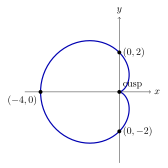
Example 12.2.38: A five-petal rose
Graph \(r=2\sin5\theta\): find the number of petals, the directions of the tips, and the interval of \(\theta\) that traces the curve once.
Solution. \(m=5\) is odd, so by Theorem 12.2.17 there are \(5\) petals and \(0\le\theta\le\pi\) traces the curve once (indeed \(\sin(5\theta+5\pi)=-\sin5\theta\), Theorem 12.2.23(2)). The tips are where \(\sin5\theta=\pm1\): \(5\theta=\frac\pi2+k\pi\), \(\theta_k=\frac\pi{10}+\frac{k\pi}5\) for \(k=0,1,2,3,4\), with \(r=2\sin\left(\frac\pi2+k\pi\right)=2(-1)^k\). For even \(k\), \(r=2>0\) and the tip direction is \(\theta_k\); for odd \(k\), \(r=-2<0\) and the tip is on the opposite ray, direction \(\theta_k+\pi\). In degrees, the directions are \(\theta_k\cdot\frac{180}\pi=18^\circ+36^\circ k\), plus \(180^\circ\) for odd \(k\):
Sorted, they are \(18^\circ,90^\circ,162^\circ,234^\circ,306^\circ\): five tips, \(72^\circ\) apart, each \(2\) units from \(O\), as a rose with five equal petals should have.
Example 12.2.39: A logarithmic spiral
Describe \(r=2e^{\theta/4}\), \(-\infty<\theta<\infty\).
Solution. \(r>0\) for all \(\theta\), so the point is on the ray at angle \(\theta\), at distance \(2e^{\theta/4}\). As \(\theta\) increases the distance grows, and as \(\theta\to-\infty\), \(r\to0\): the curve winds infinitely often around the origin without reaching it. One turn. Going once around adds \(2\pi\) to \(\theta\) and multiplies the distance by \(\frac{2e^{(\theta+2\pi)/4}}{2e^{\theta/4}}=e^{\pi/2}\approx4.81\), the same factor on every turn; this is why the spiral is self-similar. Crossings of the positive \(x\)-axis: \(\theta=2\pi k\), \(r=2e^{\pi k/2}\): \(2,\ 2e^{\pi/2}\approx9.62,\dots\) and for \(k=-1\), \(2e^{-\pi/2}\approx0.416\).
Group 4: Symmetry and period¶
Example 12.2.40: A curve that is symmetric about the origin only
Test \(r^2=9\sin2\theta\) for symmetry about the axes and the origin.
Solution. \(x\)-axis. \((r,-\theta)\): \(r^2=9\sin(-2\theta)=-9\sin2\theta\), not the original. \((-r,\pi-\theta)\): \(r^2=9\sin(2\pi-2\theta)=-9\sin2\theta\), not the original. Both tests fail. \(y\)-axis. \((r,\pi-\theta)\) and \((-r,-\theta)\) give the same two results: both fail. Origin. \((-r,\theta)\): \((-r)^2=r^2=9\sin2\theta\), the original: symmetric about the origin. The failing tests do not by themselves prove that there is no symmetry (Theorem 12.2.21 gives sufficient conditions only), so we check directly. Points exist only where \(\sin2\theta\ge0\), that is \(0\le\theta\le\frac\pi2\) or \(\pi\le\theta\le\frac{3\pi}2\) (mod \(2\pi\)): the points \(P(\pm3\sqrt{\sin2\theta},\theta)\) lie in the first and third quadrants. The reflection of a point \(\neq O\) of the first quadrant in the \(x\)-axis lies in the fourth quadrant, which the curve does not enter, and likewise for the \(y\)-axis. So there is no symmetry about the axes. Answer. Symmetric about the origin only (it is also symmetric about the line \(y=x\), which these tests do not check). At \(\theta=\frac\pi{12}\): \(r^2=9\sin\frac\pi6=\frac92\).
Example 12.2.41: Periods
Find an interval of \(\theta\) that traces each curve completely: (a) \(r=\sin\frac{5\theta}3\); (b) \(r=\cos\frac{4\theta}3\).
Solution. (a) \(p=5\), \(q=3\) are both odd, so Theorem 12.2.23(3) gives length \(\pi q=3\pi\): \(f(\theta+3\pi)=\sin\left(\frac{5\theta}3+5\pi\right)=-\sin\frac{5\theta}3=-f(\theta)\), and \(3\pi\) is an odd multiple of \(\pi\). (b) \(p=4\), \(q=3\): not both odd, so the length is \(2\pi q=6\pi\): \(f(\theta+6\pi)=\cos\left(\frac{4\theta}3+8\pi\right)=f(\theta)\). Note. For (b) a shorter shift does not give \(f(\theta+P)=-f(\theta)\) with \(P\) an odd multiple of \(\pi\): for \(P=3\pi\), \(f(\theta+3\pi)=\cos(\frac{4\theta}3+4\pi)=f(\theta)\), but \(3\pi\) is not a multiple of \(2\pi\), so Theorem 12.2.23(1) does not apply.
Group 5: Tangent lines¶
Example 12.2.42: Tangent to the spiral of Archimedes
Find the tangent line to \(r=\theta\) at \(\theta=\frac\pi2\).
Solution. \(f=\theta\), \(f'=1\). Then \(x'=f'\cos\theta-f\sin\theta=\cos\theta-\theta\sin\theta\) and \(y'=f'\sin\theta+f\cos\theta=\sin\theta+\theta\cos\theta\). At \(\theta=\frac\pi2\): \(x'=0-\frac\pi2\cdot1=-\frac\pi2\) and \(y'=1+0=1\). The slope is \(\frac{1}{-\pi/2}=-\frac2\pi\). The point is \(\left(\frac\pi2\cos\frac\pi2,\frac\pi2\sin\frac\pi2\right)=\left(0,\frac\pi2\right)\). Answer. \(y-\frac\pi2=-\frac2\pi x\), that is \(y=-\frac2\pi x+\frac\pi2\).
Example 12.2.43: Horizontal and vertical tangents of a cardioid
Find the points of \(r=1+\cos\theta\), \(0\le\theta<2\pi\), where the tangent is horizontal or vertical.
Solution. From Example 12.2.30, \(y'=\cos\theta+\cos2\theta\) and \(x'=-\sin\theta(1+2\cos\theta)\). Horizontal (\(y'=0\), \(x'\ne0\)): \(\cos\theta+2\cos^2\theta-1=0\) (using \(\cos2\theta=2\cos^2\theta-1\)), that is \((2\cos\theta-1)(\cos\theta+1)=0\). So \(\cos\theta=\frac12\), \(\theta=\frac\pi3,\frac{5\pi}3\), where \(x'=-\sin\theta\cdot2\ne0\); or \(\cos\theta=-1\), \(\theta=\pi\), where \(x'=0\) as well, so the theorem does not apply (this is the cusp, where \(f(\pi)=f'(\pi)=0\) and the velocity vanishes). The horizontal tangents are at \(\left(\frac34,\pm\frac{3\sqrt3}4\right)\). Vertical (\(x'=0\), \(y'\ne0\)): \(\sin\theta=0\) gives \(\theta=0\) (\(y'=1+1=2\ne0\)): the point \((2,0)\); \(\theta=\pi\) is the cusp again. \(1+2\cos\theta=0\) gives \(\cos\theta=-\frac12\), \(\theta=\frac{2\pi}3,\frac{4\pi}3\), where \(y'=\cos\theta+\cos2\theta=-\frac12-\frac12=-1\ne0\): \(r=\frac12\), the points \(\left(-\frac14,\pm\frac{\sqrt3}4\right)\). Answer. Horizontal at \(\left(\frac34,\pm\frac{3\sqrt3}4\right)\); vertical at \((2,0)\) and \(\left(-\frac14,\pm\frac{\sqrt3}4\right)\).
Example 12.2.44: A tangent to a rose
For \(r=3\cos2\theta\) find the tangent lines at the origin and the slope of the tangent at \(\theta=\frac\pi6\).
Solution. Origin. \(3\cos2\theta=0\) for \(2\theta=\frac\pi2+k\pi\): \(\theta=\frac\pi4,\frac{3\pi}4\) in \([0,\pi]\). \(f'=-6\sin2\theta\), \(f'\left(\frac\pi4\right)=-6\ne0\) and \(f'\left(\frac{3\pi}4\right)=6\ne0\). By Theorem 12.2.13 the tangent lines at \(O\) are \(\theta=\frac\pi4\) and \(\theta=\frac{3\pi}4\), that is \(y=x\) and \(y=-x\). At \(\theta=\frac\pi6\). \(f=3\cos\frac\pi3=\frac32\) and \(f'=-6\sin\frac\pi3=-3\sqrt3\). Then
The slope is \(\dfrac{y'}{x'}=\dfrac{-3\sqrt3/4}{-21/4}=\dfrac{3\sqrt3}{21}=\dfrac{\sqrt3}7\approx0.247\).
Group 6: Intersections¶
Example 12.2.45: Two circles
Find all intersections of \(r=2\sin\theta\) and \(r=2\cos\theta\).
Solution. Both functions have period \(2\pi\). (A): \(2\sin\theta=2\cos\theta\), \(\tan\theta=1\), \(\theta=\frac\pi4,\frac{5\pi}4\): \(r=\sqrt2\) at \(\frac\pi4\) (the point \((1,1)\)) and \(r=-\sqrt2\) at \(\frac{5\pi}4\) (the point \(\left(-\sqrt2\cos\frac{5\pi}4,-\sqrt2\sin\frac{5\pi}4\right)=(1,1)\) again). (B): \(f(\theta)=-g(\theta+\pi)\) reads \(2\sin\theta=-2\cos(\theta+\pi)=2\cos\theta\), the same equation as (A): nothing new. Origin. \(2\sin\theta=0\) at \(\theta=0\) and \(2\cos\theta=0\) at \(\theta=\frac\pi2\): the origin is on both. Answer. \((1,1)\) and the origin. (The circles are \(x^2+(y-1)^2=1\) and \((x-1)^2+y^2=1\), which indeed meet at \((0,0)\) and \((1,1)\).)
Example 12.2.46: A circle and a cardioid meeting at the origin
Find all intersections of \(r=3\cos\theta\) and \(r=1+\cos\theta\).
Solution. Let \(f=1+\cos\theta\), \(g=3\cos\theta\). (A): \(1+\cos\theta=3\cos\theta\), \(\cos\theta=\frac12\), \(\theta=\pm\frac\pi3\), \(r=\frac32\): the points \(\left(\frac32\cos\frac\pi3,\pm\frac32\sin\frac\pi3\right)=\left(\frac34,\pm\frac{3\sqrt3}4\right)\). (B): \(f(\theta)=-g(\theta+\pi)\), \(1+\cos\theta=-3\cos(\theta+\pi)=3\cos\theta\): the same equation: nothing new. Origin. \(f(\pi)=1+\cos\pi=0\) and \(g\left(\frac\pi2\right)=0\): the origin is on both, reached at different angles; (A) does not find it, since at \(\theta=\pi\), \(f=0\) but \(g=-3\). Answer. Three points: \(\left(\frac34,\frac{3\sqrt3}4\right)\), \(\left(\frac34,-\frac{3\sqrt3}4\right)\) and the origin (Figure below).
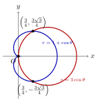
Example 12.2.47: A lemniscate and a circle
Find all intersections of \(r^2=2\cos2\theta\) and \(r=1\).
Solution. The lemniscate is not of the form \(r=f(\theta)\), so we use the Cartesian equations instead, which avoid the problem of several representations (Theorem 12.2.9). The lemniscate is \((x^2+y^2)^2=2(x^2-y^2)\) (as in Example 12.2.19) and the circle is \(x^2+y^2=1\). Substituting \(x^2+y^2=1\): \(1=2(x^2-y^2)\), so \(x^2-y^2=\frac12\). Adding \(x^2+y^2=1\): \(2x^2=\frac32\), \(x^2=\frac34\), and then \(y^2=1-\frac34=\frac14\). So \(x=\pm\frac{\sqrt3}2\), \(y=\pm\frac12\): four points, one in each quadrant, at the angles \(\pm\frac\pi6\) and \(\pi\pm\frac\pi6\). Check in polar form: at \(\theta=\frac\pi6\), \(r^2=2\cos\frac\pi3=1\), so \(r=\pm1\), and \(r=1\) is on the circle. The origin is on the lemniscate but not on the circle. Answer. \(\left(\pm\frac{\sqrt3}2,\pm\frac12\right)\) (all four sign choices).
Group 7: Proofs¶
Example 12.2.48: The angle between the radius and the tangent
Let \(\psi\) be the angle from the radial direction \((\cos\theta,\sin\theta)\) to the tangent direction \((x',y')\) of \(r=f(\theta)\). Prove that if \(f'\ne0\), then \(\tan\psi=\dfrac{f(\theta)}{f'(\theta)}\).
Plan. The tangent of the angle between two vectors is their cross product divided by their dot product; compute both with Theorem 12.2.13.
Proof. For vectors \(\mathbf u=(\cos\theta,\sin\theta)\) and \(\mathbf v=(x',y')\) with angle \(\psi\) from \(\mathbf u\) to \(\mathbf v\), \(\mathbf u\cdot\mathbf v=\abs{\mathbf v}\cos\psi\) and \(u_1v_2-u_2v_1=\abs{\mathbf v}\sin\psi\) (the length of \(\mathbf u\) is \(1\)). Now
Dividing, \(\tan\psi=\dfrac{\abs{\mathbf v}\sin\psi}{\abs{\mathbf v}\cos\psi}=\dfrac f{f'}\) (when \(f'\ne0\), \(\cos\psi\ne0\)). ◻ ∎
For the cardioid \(r=1+\cos\theta\) at \(\theta=\frac\pi2\): \(\tan\psi=\frac{1}{-1}=-1\), so \(\psi=-\frac\pi4\) (\(-45^\circ\)), which agrees with the slope \(1\) found in Example 12.2.30: the radial direction is vertical (angle \(90^\circ\)) and the tangent direction has angle \(90^\circ-45^\circ=45^\circ\), slope \(\tan45^\circ=1\).
Example 12.2.49: Rotating a polar curve
Prove that the graph of \(r=f(\theta-\alpha)\) is the graph of \(r=f(\theta)\) rotated counterclockwise about \(O\) through the angle \(\alpha\).
Plan. Rotation through \(\alpha\) adds \(\alpha\) to the angle in a polar representation. Show that this maps one graph onto the other.
Proof. A rotation about \(O\) through \(\alpha\) takes \((r\cos\varphi,r\sin\varphi)\) to \(\bigl(r\cos(\varphi+\alpha),r\sin(\varphi+\alpha)\bigr)\): by the addition formulas \(\cos(\varphi+\alpha)=\cos\varphi\cos\alpha-\sin\varphi\sin\alpha\) and \(\sin(\varphi+\alpha)=\sin\varphi\cos\alpha+\cos\varphi\sin\alpha\), so the new point is the old point multiplied by the rotation matrix, which is the rotation through \(\alpha\). Hence the rotation maps \(P(r,\varphi)\) to \(P(r,\varphi+\alpha)\). If \(P(r,\varphi)\) is on \(r=f(\theta)\), that is \(r=f(\varphi)\), then the rotated point \(P(r,\varphi+\alpha)\) satisfies \(r=f\bigl((\varphi+\alpha)-\alpha\bigr)\), so it is on \(r=f(\theta-\alpha)\). Conversely, if \(P(r,\theta)\) is on \(r=f(\theta-\alpha)\), then rotating it through \(-\alpha\) gives \(P(r,\theta-\alpha)\) with \(r=f(\theta-\alpha)\), a point of \(r=f(\theta)\), and rotating that back through \(\alpha\) gives \(P(r,\theta)\). So the rotation is a bijection from one graph onto the other. ◻ ∎
Example: \(r=\sin2\theta\) is \(r=\cos\left(2\theta-\frac\pi2\right)=\cos2\left(\theta-\frac\pi4\right)\), the rose \(r=\cos2\theta\) rotated through \(\frac\pi4\), as Theorem 12.2.17 said.
Example 12.2.50: The lemniscate equation
Prove that for \(a\ne0\) the graph of \(r^2=a^2\cos2\theta\) is exactly the set of points with \((x^2+y^2)^2=a^2(x^2-y^2)\).
Plan. Convert with \(x^2+y^2=r^2\) and \(\cos2\theta=\cos^2\theta-\sin^2\theta\); treat the origin separately because dividing by \(r^2\) is involved.
Proof. Let \(P=(x,y)\ne O\) with a representation \((r,\theta)\), \(r\ne0\). Then \(x^2-y^2=r^2\left(\cos^2\theta-\sin^2\theta\right)=r^2\cos2\theta\) and \(x^2+y^2=r^2\), so
Since \(r^2\ne0\), the left side is \(0\) exactly when \(r^2=a^2\cos2\theta\). By Theorem 12.2.9(1) (the equation \(r^2=a^2\cos2\theta\) is \(F(r\cos\theta,r\sin\theta)=0\) for the Cartesian \(F(x,y)=(x^2+y^2)^2-a^2(x^2-y^2)\) divided by \(r^2\), and changing the representation does not change the condition), the two descriptions agree for every \(P\ne O\). The origin satisfies the Cartesian equation (\(0=0\)) and lies on the polar graph: \(r=0\) at \(\theta=\frac\pi4\), where \(\cos2\theta=0\), so \(r^2=0=a^2\cos\frac\pi2\). ◻ ∎
Answers and discussion¶
Knowledge Check 12.2.1. The first, second and third pairs represent the same point and the fourth does not. \(\left(-2,\frac{4\pi}3\right)=\left(2,\frac{4\pi}3-\pi\right)=\left(2,\frac\pi3\right)\); \(\left(2,\frac{7\pi}3\right)=\left(2,\frac\pi3+2\pi\right)=\left(2,\frac\pi3\right)\); but \(\left(-2,-\frac\pi3\right)=\left(2,\frac{2\pi}3\right)\), whose Cartesian form is \((-1,\sqrt3)\), not \((1,\sqrt3)\).
Knowledge Check 12.2.2. Multiply by \(r\): \(r^2=-3r\sin\theta\), so \(x^2+y^2=-3y\) and \(x^2+y^2+3y+\frac94=\frac94\), that is \(x^2+\left(y+\frac32\right)^2=\frac94\): the circle with center \(\left(0,-\frac32\right)\) and radius \(\frac32\). This agrees with Theorem 12.2.11(3) with \(a=0\), \(b=-\frac32\).
Knowledge Check 12.2.3. \(r=3\sin7\theta\) has \(m=7\) odd: \(7\) petals, traced once for \(0\le\theta\le\pi\). \(r=2\cos6\theta\) has \(m=6\) even: \(2m=12\) petals, traced once for \(0\le\theta\le2\pi\) (Theorems 12.2.17 and 12.2.23).